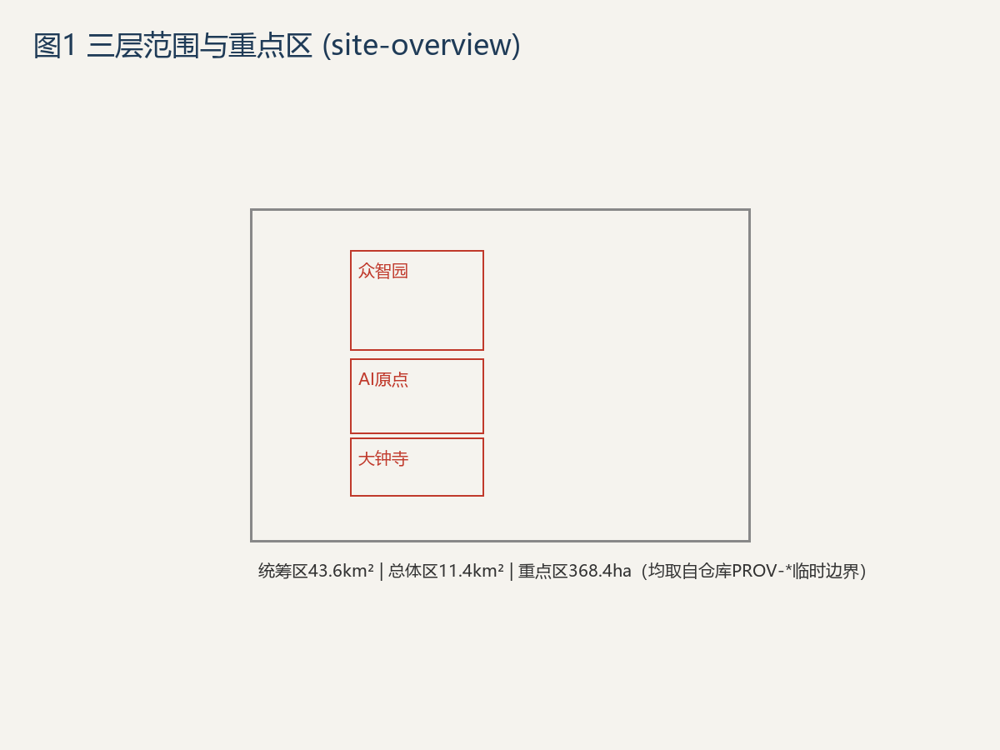
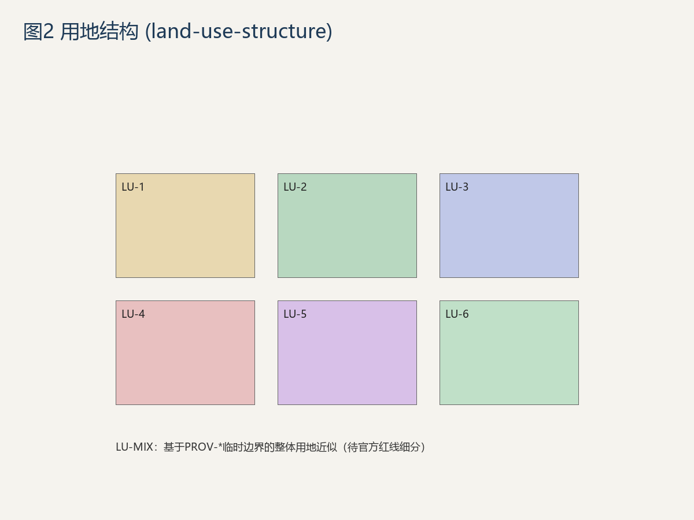
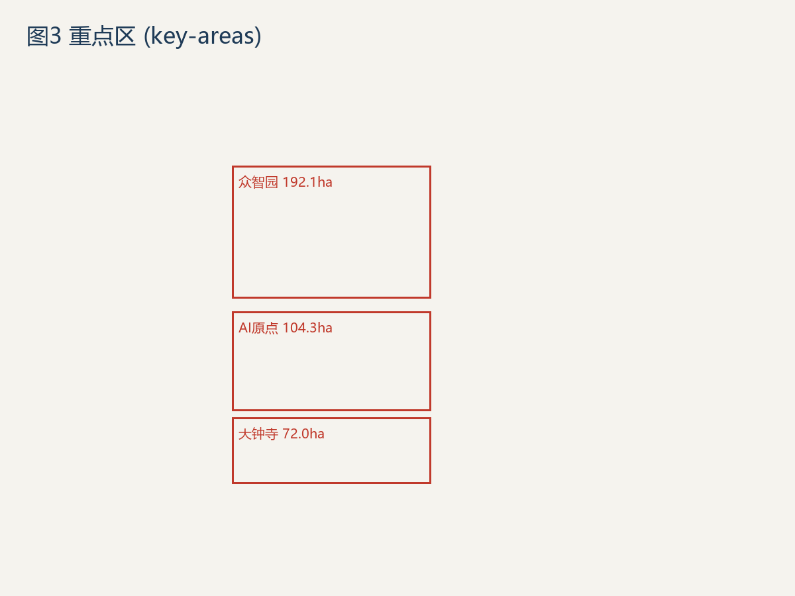
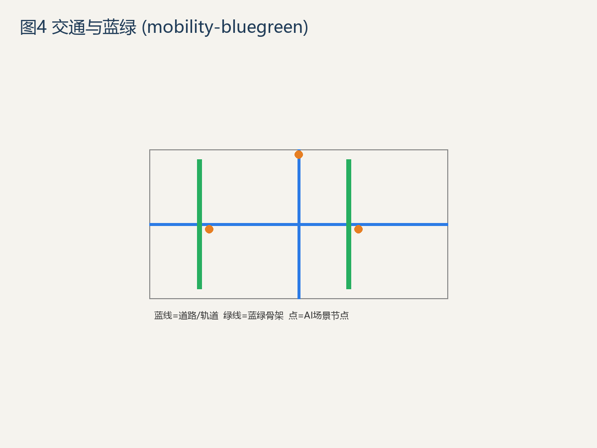
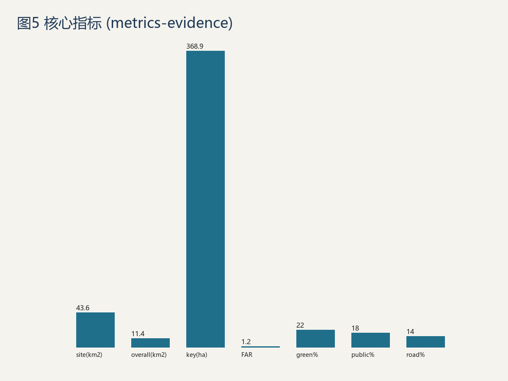

Geometry from repository PROV-* provisional boundaries, pending official redline; figures from metrics.json.
Coordinated 43.65 km² (official 43.6)
Overall 11.42 km² (official 11.4)
Key 369.7 ha (official 368.4)
Zhongzhi Park 192.1ha · AI Origin Community 104.3ha · Dazhongsi 72.0ha
FAR 1.0
Blue-Green 3%
Public Space 5%
Road 1%
Personas 5
Scenario Cards 12
Industry Tests 3
Pilgrimage Sites 3





announcement 1.3/1.4/1.5 + agent.1–agent.6 fully covered (see compliance_matrix.json). All four gate self_checks pass.
Sources in sources.json (incl. PROV-* provisional boundary traceability); assumptions in assumptions.json (geo_provisional / area_recalculation / far_assumed / official_data_gap).